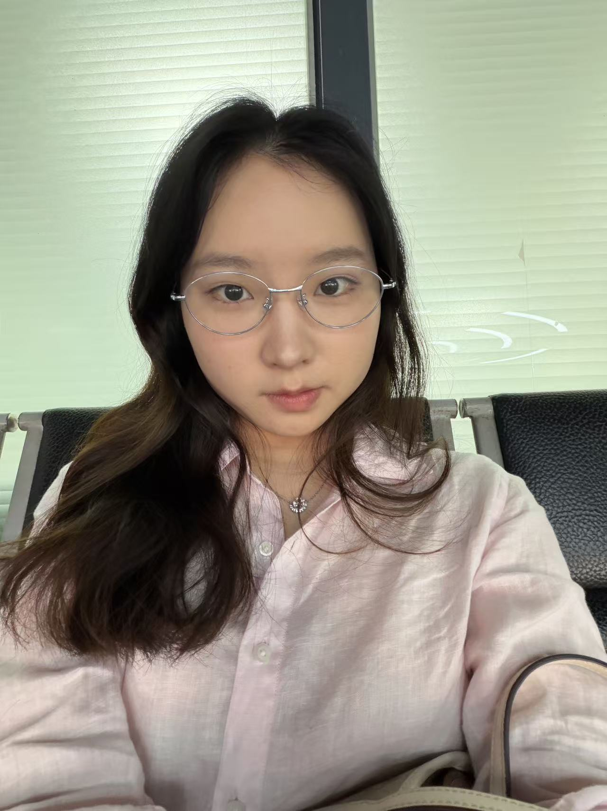

陈佳路 ｜个人简历
2027 届本科｜华东交通大学｜电气工程及其自动化｜户籍地：江苏苏州
手机：18251123098 邮箱：3491859923@qq.com

华东交通大学｜本科｜电气工程及其自动化
2023.09 - 2027.06｜GPA：3.57
大一二等奖学金（综测前8%）
大二、大三三等奖学金（综测前15%）
英语四级 521｜英语六级 449｜普通话二级甲等
实习经历
华勤技术股份有限公司 2026.07 - 2026.10
制造项目实习生｜SMT OPM / NPI 项目推进
- 项目与业务推进：跟进 3 个消费电子 NPI/SMT 试产项目，其中独立负责 Gobi、Rio Pro 2 个项目的 SMT 侧试产推进，Hesse 项目协助导师完成导入；覆盖试产准备、资源确认、生产执行、异常处理及项目复盘。
- 流程拆解与风险前置：围绕物料、工单/验证、工装、程序、线体、首件及交付等关键业务节点，将复杂事项拆解为 Checklist、T 节点、责任人和截止时间；通过状态核查提前识别风险并推动上线前闭环。
- 问题闭环与跨团队协同：持续对接 NPI、PE、TE、PQE、计划、物料及生产团队，完成信息澄清、方案协调与状态同步；跨产线关键物料逐节点推进，推动等待压缩 3h+；夜班工装异常快速拉通工程团队，减少 5h+ 潜在等待。
- 数据留痕与复盘：维护项目台账、风险清单及 MES/工单/验证记录，结合现场状态交叉确认；参与 210pcs 试产、2 个工单、55 套工装载具资源统筹，项目复盘获部门经理公开认可并作为团队学习案例。
碧梦技（扬州）复合材料有限公司 2025.06 - 2025.08
设备自动化实习生｜技术部｜原扬州立德粉末冶金有限公司
- 接触 PLC、传感器、控制柜、限位开关及自动化设备动作时序，理解 I/O 信号与设备联动逻辑，参与设备运行异常观察、记录与现场分析。
- 针对设备出料“空推/空拍”问题，记录触发条件与动作顺序，在技术经理指导下参与 PLC 动作时序优化，减少无效动作，相关工序生产节拍提升约 10%。
课程项目 / 数据分析
单相 H 桥逆变器 SPWM 仿真分析｜MATLAB/Simulink
- 完成模型搭建、参数设置与 3 组典型工况对比，分析参数变化对输出性能的影响；通过参数调整与仿真验证，电流 THD 由 17.02% 降至 6.27%，体现电力电子基础、数据分析、问题拆解与工程验证能力。
- 数字石英钟设计｜Multisim：完成 24 小时制计时、显示、校时、报时及清零模块拆分和仿真调试，针对显示、清零及报时触发问题逐项验证，提升模块化设计与问题定位能力。
核心技能
| 产品 / 项目 | 业务流程拆解、需求/问题澄清、Checklist/T 节点、Risk 前置、跨部门推进、异常闭环与结构化复盘。 |
| AI / 数据 | 使用 AI 工具辅助资料检索、信息归纳、需求梳理、数据分析及 PPT 结构优化；熟练 Excel 数据整理与项目台账。 |
| 沟通 / 表达 | 具备多角色信息同步、问题澄清、方案协调与向上汇报经验；熟练使用 Word、PowerPoint。 |
| 技术 / 英语 | 电气自动化专业背景，具备 PLC/I/O、AutoCAD、MATLAB/Simulink 基础；英语四级 521、英语六级 449，具备英文资料阅读能力。 |
相关课程 / 校园经历
相关课程：自动控制原理、PLC 控制技术、电力电子技术、电机学、电力系统分析、供配电技术、模拟/数字电子技术。
校园经历：班级文体委员、校文工团舞蹈组核心成员；双人舞《知秋》获校级校园舞蹈比赛普通组二等奖，具备组织协调、团队协作与现场执行能力。